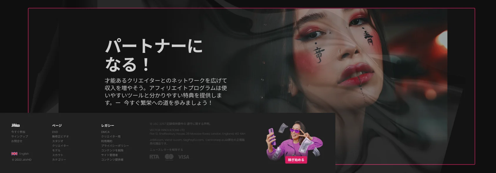
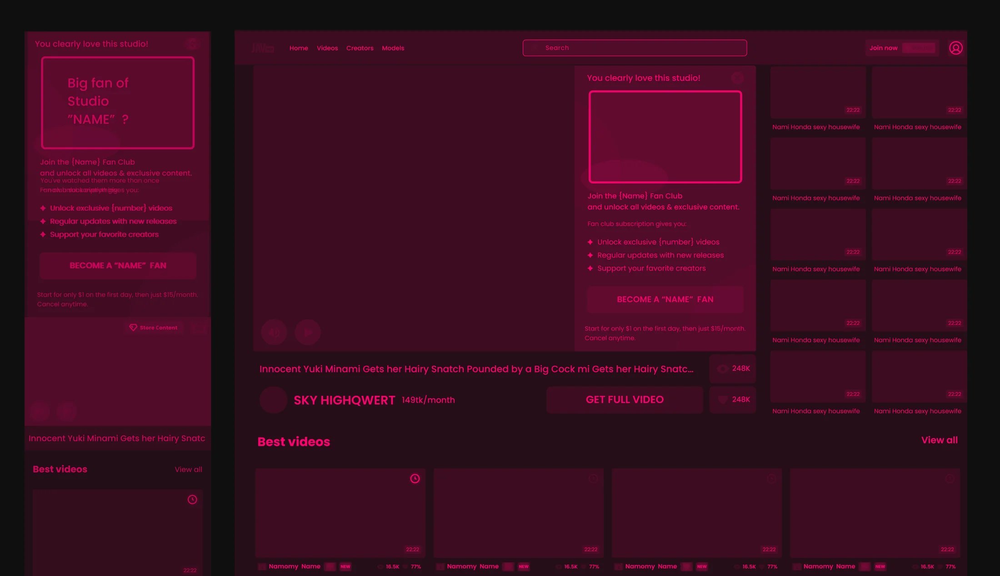
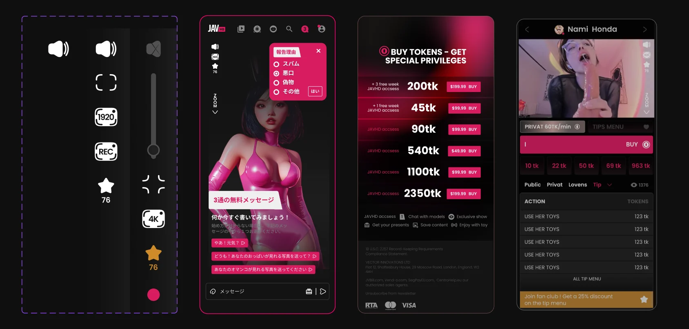

Связал промо, онбординг и монетизацию видеоплатформы
Спроектировал связанный путь видеоплатформы: от рекламного сообщения и лендинга до онбординга, знакомства с функциями и оплаты.

Задача, решение и итог
- 01Задача
Промо и продукт должны последовательно объяснить ценность до экрана оплаты.
- 02Решение
Связал рекламное сообщение, лендинг, онбординг и продуктовые действия в один сценарий.
- 03Функциональный итог
Пользователь проходит от обещания к функции и понимает доступное следующее действие.
С чем пришла команда
Видеоплатформа работает в конкурентной категории. Пользователь встречает продукт через промо, затем должен быстро понять предложение и увидеть ценность внутри интерфейса.
Нужно было убрать разрыв между рекламным сообщением, онбордингом и монетизацией. Каждый следующий экран должен продолжать предыдущий, а не начинать объяснение заново.
- Связать промо и продуктовый сценарий.
- Показать ценность до оплаты.
- Сохранить логику на мобильных экранах.
Собрал систему промо-страниц вокруг гипотез
Проектировал лендинги как варианты одного маркетингового сценария. Структура поддерживает конкретное обещание, визуальную тему и переход к продукту.
Вместо изолированных страниц получилась повторяемая система: сообщение, доказательство, действие и продолжение внутри сервиса.

Продолжил обещание внутри продукта
Онбординг знакомит с механикой платформы, а интерфейс монетизации показывает доступные варианты без смены визуального языка.
Стриминг, чат, токены и покупка собраны как связанные действия. Пользователь видит, зачем переходить дальше и что изменится после выбора.
Как могла бы выглядеть воронка сценария
Синтетическая модель- Промо
- Лендинг
- Онбординг
- Ценность внутри продукта
- Оплата

Что получилось
Промо, онбординг и продукт используют общий сценарный язык. Пользователь проходит от первого сообщения к функции и оплате без резкой смены контекста.
Система поддерживает разные маркетинговые темы, сохраняя узнаваемую структуру действий внутри продукта.